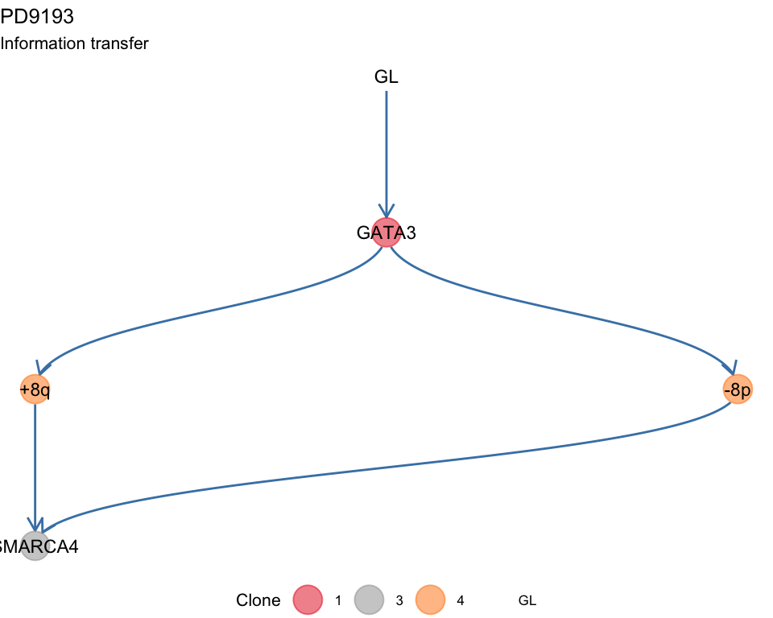
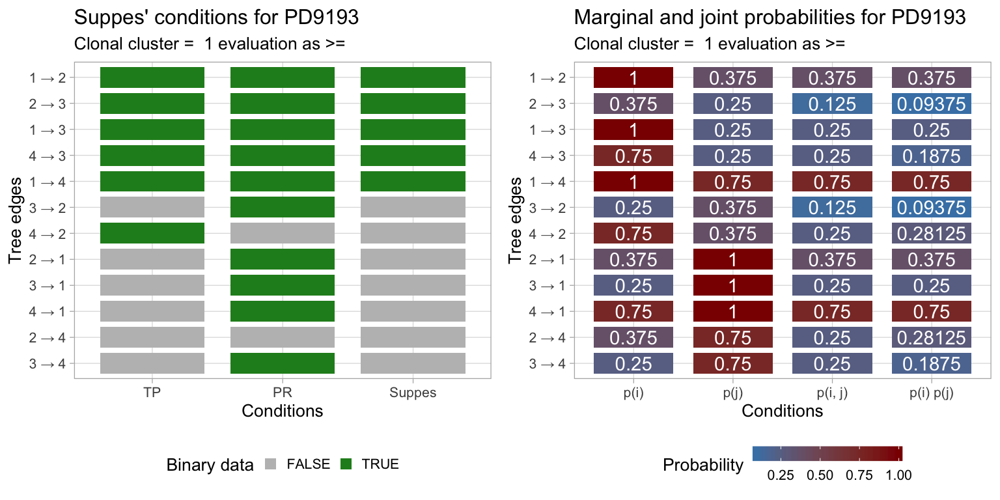

mtree.RmdThe mtree is a package to implement basic functions to create, manipulate and visualize mutation trees. A mutation tree is a tree built from binary sequencing data that reports the presence or absence of a set of somatic variants (mutations, copy number etc.) in multiple tumour biopsies.
The trees created with mtree are used inside REVOLVER, a package that implements one algorithm to determine repeated cancer evolution from multi-region sequencing data of human cancers.
#> [ Mtree - Mutation Trees in cancer ]
#> Author : Giulio Caravagna <gcaravagn@gmail.com>
#> GitHub : caravagn/mtree
#>
To build a mutation tree you need some basic datal; an example dataset is attached to the package and can be used to create a ctree S3 object.
Binary data
Binary data that reports the presence (1) or absence (0) of any somatic event that you want annotate in your data. To run mtree you need to report both which of the annotated events are drivers, but also which sets of events are always found in the same samples and, therefore, have same patterns of 0s and 1s.
An example dataset is the following
#> # A tibble: 4 x 14
#> Misc patientID cluster is.driver is.clonal PD9193d PD9193e PD9193f
#> <chr> <chr> <chr> <lgl> <lgl> <dbl> <dbl> <dbl>
#> 1 cuto… PD9193 2 FALSE FALSE 1 1 1
#> 2 cuto… PD9193 3 TRUE FALSE 1 0 0
#> 3 cuto… PD9193 1 TRUE TRUE 1 1 1
#> 4 cuto… PD9193 4 TRUE FALSE 1 0 1
#> # … with 6 more variables: PD9193g <dbl>, PD9193h <dbl>, PD9193i <dbl>,
#> # PD9193j <dbl>, PD9193k <dbl>, nMuts <dbl>
Where cluster 1 represents all the annotated events that are detected across all sequenced biopsies. Notice that this is similar, but not exactly the same, to clusters obtained from subclonal deconvolution of Cancer Cell Fractions.
The set of drivers annotated in this sequencing data is reported clonality status, variantID and a patientID.
#> # A tibble: 4 x 15
#> Misc patientID variantID cluster is.driver is.clonal PD9193d PD9193e
#> <chr> <chr> <chr> <chr> <lgl> <lgl> <dbl> <dbl>
#> 1 cuto… PD9193 SMARCA4 3 TRUE FALSE 1 0
#> 2 cuto… PD9193 GATA3 1 TRUE TRUE 1 1
#> 3 cuto… PD9193 +8q 4 TRUE FALSE 1 0
#> 4 cuto… PD9193 -8p 4 TRUE FALSE 1 0
#> # … with 7 more variables: PD9193f <dbl>, PD9193g <dbl>, PD9193h <dbl>,
#> # PD9193i <dbl>, PD9193j <dbl>, PD9193k <dbl>, nMuts <dbl>
Other data
You can use a sampler and control its parameters – see mtrees.
x = mtrees(
mtree_input$binary_clusters,
mtree_input$drivers,
mtree_input$samples,
mtree_input$patient,
mtree_input$sspace.cutoff,
mtree_input$n.sampling,
mtree_input$store.max
)#> [ mtree ~ generate mutation trees for PD9193 ]
#> Sampler : 10000 (cutoff), 5000 (sampling), 100 (max store)
#> Suppes' conditions : >=
#> # A tibble: 4 x 14
#> Misc patientID cluster is.driver is.clonal PD9193d PD9193e PD9193f
#> <chr> <chr> <chr> <lgl> <lgl> <dbl> <dbl> <dbl>
#> 1 cuto… PD9193 2 FALSE FALSE 1 1 1
#> 2 cuto… PD9193 3 TRUE FALSE 1 0 0
#> 3 cuto… PD9193 1 TRUE TRUE 1 1 1
#> 4 cuto… PD9193 4 TRUE FALSE 1 0 1
#> # … with 6 more variables: PD9193g <dbl>, PD9193h <dbl>, PD9193i <dbl>,
#> # PD9193j <dbl>, PD9193k <dbl>, nMuts <dbl>
#>
#> ✔ Structures 3 - search is exahustive
#> ✔ Trees with non-zero sscore 3 storing 3
#>
The sampler creates a number of mutation trees that can fit the data according to a model that integrates Chow-Liu trees with probabilistic causation.
In particular, if we denote with \(p(\cdot)\) the empirical probability of a variable from the data, then the presence of an edge \(x \to y\) requires these conditions to be satisfied.
These are relaxations of Suppes’ original strict conditions (i.e., \(p(x) > p(y)\)) for probabilistic causation, and are termed temporal priority and probability raising; PMID 27357673. These conditions are used to create a partially ordered set, from which possible trees are generated. In the Chow-Liu style, the trees are scored according to the mutual information among the connected variables, which is the quantity that one seeks to maximise.
We work with the top-ranking model.
S3 functions for printing, and summarizing the object.
#> [ mtree - mtree rank 1/3 for PD9193 ]
#>
#> # A tibble: 4 x 14
#> Misc patientID cluster is.driver is.clonal PD9193d PD9193e PD9193f
#> <chr> <chr> <chr> <lgl> <lgl> <dbl> <dbl> <dbl>
#> 1 cuto… PD9193 2 FALSE FALSE 1 1 1
#> 2 cuto… PD9193 3 TRUE FALSE 1 0 0
#> 3 cuto… PD9193 1 TRUE TRUE 1 1 1
#> 4 cuto… PD9193 4 TRUE FALSE 1 0 1
#> # … with 6 more variables: PD9193g <dbl>, PD9193h <dbl>, PD9193i <dbl>,
#> # PD9193j <dbl>, PD9193k <dbl>, nMuts <dbl>
#>
#> Tree shape (drivers annotated)
#>
#> \-GL
#> \-1 [PD9193k] :: GATA3
#> |-4 :: +8q, -8p
#> | \-3 :: SMARCA4
#> \-2
#>
#> Information transfer
#>
#> +8q ---> SMARCA4
#> -8p ---> SMARCA4
#> GL ---> GATA3
#> GATA3 ---> +8q
#> GATA3 ---> -8p
#>
#> Tree score 0.000697748027942915
#>
summary(x)
#> Length Class Mode
#> adj_mat 25 -none- numeric
#> tb_adj_mat 10 tbl_graph list
#> score 1 -none- numeric
#> patient 1 -none- character
#> samples 8 -none- character
#> drivers 15 tbl_df list
#> CCF 14 tbl_df list
#> binary 1 -none- logical
#> transfer 2 -none- list
#> annotation 1 -none- character
#> tree_type 1 -none- character
#> evaluation 1 -none- character
#> binary_data 14 tbl_df list
#> Suppes 3 -none- listThen some plotting functions for the tree. A tree layout is used to display the mutation tree and the information transfer, which corresponds to the ordering of the drivers annnotated in the tree. This terminology is borrowed from the REVOLVER algorithm, where it is used to refer to the set of trajectories that a patient “transfers” to another patient during the fit.
plot(x)
#> Warning: Duplicated aesthetics after name standardisation: na.rm
#> Warning: Removed 1 rows containing missing values (geom_point).
For the data, you can plot the binary clusters.
Also, you can plot the reslt of evaluating Suppes’ conditions on the data of this tree.

Or you can plot the size of each binary cluster as a barplot. This barplot is annotated to report wether a cluster of alterations with a driver is significantly larger than the expected size for the cases without driver. To carry out this test subclones without drivers are used to estimate the parameters of a univariate Gaussian distribution (mean and standard deviation), the p-value is then computed from the fit distribution through the pnorm function. The alpha level for the test can be passed as parameter.